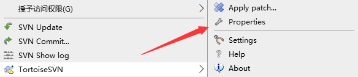

引用外部 SVN 项目 svn:externals 用法
假如你的 SVN 项目分为客户端、服务端，它们需要用到同一份配置，那么可以在 /client/common 、 /server/common 目录中存放相同的配置文件，但是每次一方修改后都要手动复制修改到另外一个目录？这也太麻烦了吧，有没更好的方法呢？这篇文章给你讲解如何使用 svn:externals 完美的解决。
假设我们的目录结构如下图所示，服务端客户端都有一个 common 目录:
最简单的方法也是最笨的方法，就是每次修改后都手动复制文件到另外一个目录，人工确保两个目录的文件一致，这很容易出问题。
稍微好点的方法是，在 /server/common 目录检出（checkout）一份 /client/common，这样省去了复制文件的麻烦，每次只需要到 common 目录进行 update 就行了。但是，我们必须记得要进去 common 目录进行更新才行，直接在外层目录进行 update 是不会更新的。
其实，SVN 还有提供一个叫 externals 的属性，可以用来在目录中引入其他 SVN 地址目录，更新时还会同步自动更新这个引入的 external 目录。
在你需要的目录，右键选择 TortoiseSVN - Properties：

在打开的属性窗口中，我们点击新建添加外部（Externals）SVN 目录
填写保存目录（Local path），外部 SVN 地址（URL)，最后点击确定
添加成功后，我们可以看到属性列表窗口已经列出来我们刚添加的地址了。
这样，我们就把客户端 /client/common 目录引入到了 /server/common
现在，我们更新试下，发现外部引入的 SVN 目录也会自动更新了，而且不需要进入 common 目录去更新，在父目录也是可以更新到的。
另外，这个外部引入的 SVN 目录，你一样可以进行修改提交，然后其他地方都能更新到这个修改。
提醒下大家，这个引入外部 SVN 目录是可以任何 SVN 地址的，不管你是不是同个 SVN 仓库都行。
最后，给大家推荐一个非常好用的在线 SVN 托管仓库：SVNBucket